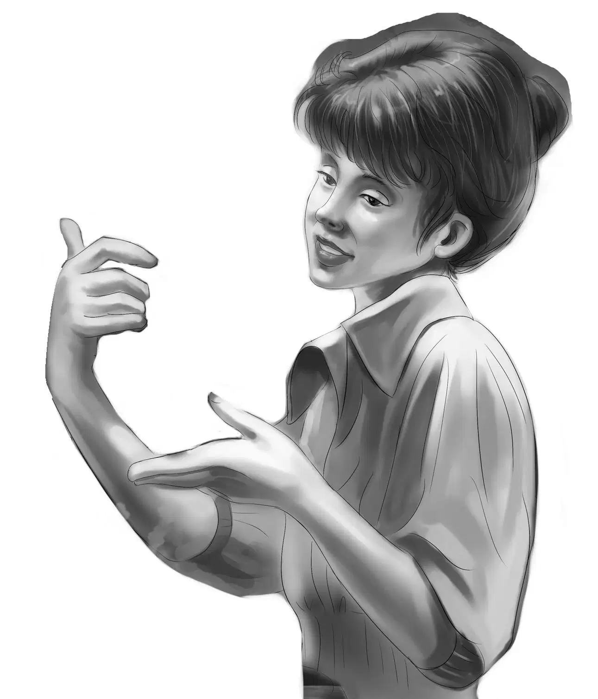
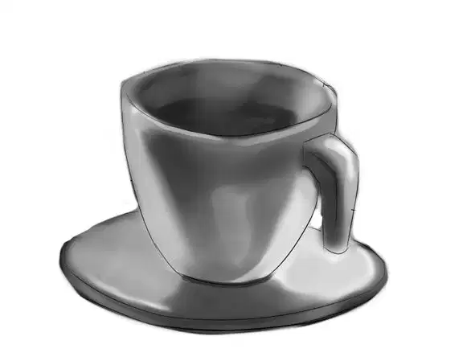
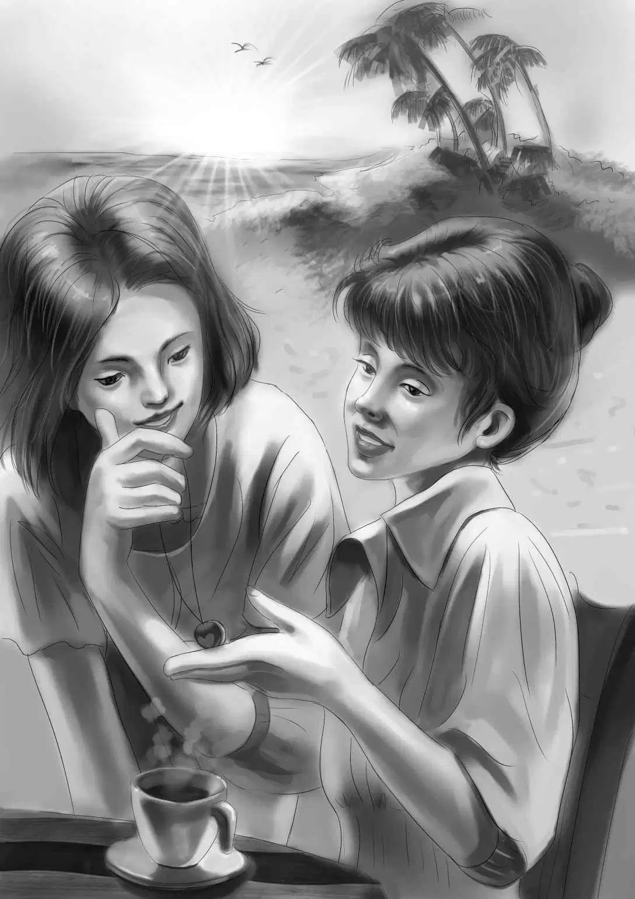

Jessie said, “For this picnic party I’m going to make sandwiches. I don’t want to take time to make a fire on the beach and cook hamburgers. I’ll make ham sandwiches and tuna and—”
“And peanut butter,” finished Benny.
“Right. And we’ll have quarts of pink lemonade and cookies—everyone likes that.”
Violet said slowly, “The ladies may like coffee, the way Grandfather does.”
“Then I’ll make some hot coffee.”
“We are lucky,” said Henry. “We have had pleasant weather almost every day. Today is just right for a picnic.”
Just at quarter of twelve, Henry’s blue car stopped in front of the Tower House. At the same moment the door of the house opened and Miss Lane came out. Miss Smith followed.

Violet and Benny had come with Henry. “We left Jessie at the beach,” Benny said, jumping out of the car. “She’s the housekeeper. Miss Lane, you climb in beside Henry, and Miss Smith will sit in the back with Violet and me.”
Miss Lane said, “We could have walked and saved you all this trouble.”
“Oh, but it’s much more fun to ride,” said Benny.“You don’t get so much sand in your shoes, either.”
“What if people see us going for a ride this way?” Miss Smith asked. “What will they think?”
Miss Lane said, “Don’t be silly, Mary. Let them think what they like. We don’t have to speak to anyone else.”
Violet thought suddenly, “This is a big step for these ladies. And it certainly would be a surprise if the people in Beachwood knew. Maybe little boys would stop talking about witches living in the Tower House.”
Down the short back road they went. Henry stopped the car right behind the trailer house.
“Come in,” called Jessie. “We want you to see the house.”
Violet put her hand lightly on Miss Lane’s arm. “This way,” she said.
The two women had never seen a mobile home from the inside. Miss Smith liked the tiny kitchen with a place for everything. Miss Lane liked the living room which changed into a bedroom at night.
You see, it’s quite roomy,” Jessie said.
So, very slowly, the Aldens got their company outdoors onto the sand. The water was very blue and beautiful, and there were now two chairs and a table and a beach umbrella. There was even a little breeze off the water, and it was very comfortable.
Benny threw himself on the sand and said, “Let’s eat, Jessie.”
“Right, Ben. I was just going to ask you to help bring out the things. You get right up. Take a plate of sandwiches in each hand, Benny, and then come back.”
Benny said, “Do I have to take one in each hand, Jessie? Suppose I carry one on my head.”
“Oh, Benny, just don’t drop them,” Jessie answered.
Benny said, “You see, ladies, there is a toothpick and a little sign telling you what kind of sandwiches we have today. This one says Ham, and this says Tuna, and of course mine says Peanut Butter and Jelly.”
Benny’s nonsense was good for the two visitors. They had to laugh, and when they saw the sandwiches, they forgot to feel stiff and shy.
Miss Lane and Miss Smith sat at the table where they could see the blue water and the Aldens. They could not see the crowd of people behind them. They could hear, but the noise seemed far away.
Miss Smith said quietly, “This pink lemonade reminds me of picnics when I was a little girl.”
Miss Lane had taken her fourth sandwich. She said, “I had forgotten how lovely a picnic can be. Sandwiches and sweet pickles and hardboiled eggs seem to go with a picnic.”
Benny said,“I forgot how swell they are myself.And you haven’t been on the beach for years.”
There was a long silence. Nobody said a thing. At last Miss Lane looked up and said, “Benny, that isn’t quite right. Mary and I were on this beach last night.”
Everyone was too surprised to speak.
Finally Jessie said, “Last night? Why?”
“We come almost every night,”replied Miss Lane. “Don’t we, Mary?”
Mary nodded yes.
“Why?” asked Benny again.
“Never mind, Ben,” said Jessie. “It really isn’t our business.”
“I know it isn’t,” Benny said. “But I’m making it my business. I really want to know. I know it isn’t polite to ask.”
Miss Smith suddenly said, “I don’t blame you a bit. I think you are a very polite boy.”
Miss Lane nodded this time. “I don’t blame you, either. We don’t want to see people or talk to people so we walk on the beach at night. We like the middle of the night. That way we get some exercise and fresh air, and we can sleep in the daytime if we want to.”
You might call us night people, just like our cats,” Miss Smith said.
Miss Lane said, “It was on one of those nights that I lost my locket.”
“Oh, your locket with R.L. on the cover!” Benny exclaimed. “Wait and I will get it for you. I put it in a safe hiding place inside.” In a moment Benny dropped the gold locket into Miss Lane’s hand. “We know now the R.L. is for Ruth Lane.”
“No,” said Miss Lane, shaking her head. “It really doesn’t stand for Ruth Lane. It just happened that way. It first belonged to my grandmother and her name was Rachel Lester. Then my mother had the locket and her name happened to be Rose Lawrence. Then I got it, and my name happened to be Ruth Lane.”
“Isn’t that a surprising story!” Benny said.
Yes, three generations and all R.L., but for three different names. I always thought it was very strange. And I am so glad to have the locket back. It belongs on this gold chain I am wearing.”
Sure enough, Miss Lane had a thick braided gold chain hanging almost to her waist. She took it off and slipped the chain through the locket.
“Found in the sand,” said Benny. “When do you think you lost it?”
“Oh, just before you came to the trailer. We looked for it the night your aunt and uncle went away and before you came. But every night we walk the beach.”
“Our midnight walkers!” Benny exclaimed.“You walk very fast.”
“Indeed yes.”
“Does anyone ever follow you?” asked Benny.
“Oh, yes, many times somebody follows us. We probably look like men because we wear old jackets and pants. Only just the other night a man in a cape followed us. But we knew who he was, so we didn’t mind.”
You knew who he was?” repeated Benny.
“Oh, yes, he is a famous writer, and he lives down the beach in the last cottage.He always wears a cape.”
“Do you know his name?” asked Violet.

“Oh, yes. Everybody even in Beachwood knows him. He is Daniel Lee.”
The Aldens looked at each other. “We know him,too,”said Henry.“It was his metal-finder that found your locket.”
“No,” said Miss Lane, really smiling now. “It was Benny who found my locket.”
“So it was,” agreed Jessie. “I guess everyone knew who Mr. Lee was except us. And we really thought we knew him best of all.”
“How did you get to know him?” asked Miss Lane.
“He came by and we spoke to him,” replied Benny. “We just said ‘Good morning,’ and he said‘Good morning’. It’s easy to make friends.”
Miss Lane said thoughtfully, “It’s easy for you, Benny. You are like that. I wouldn’t know how to begin after all these years.”
You have already begun,” said Violet gently.
Henry said, “We did see both of you walking along the beach at night. Of course we thought you were two men. We saw the man in a cape following you.”
Miss Smith said rather shyly, “I think Mr. Lee likes to feel he is looking after us. Old people don’t sleep very well at night, and they like to be useful.”
Benny said, “I believe you are right. But I have a question to ask. I found footprints in the sand one morning and this note that said ‘Ali thanks you. We all thank you.’ Did you put it there, or was it a child?”
Miss Lane and Miss Smith looked at each other and really laughed.
Miss Lane said, “We might as well tell you the whole story. Mary and I aren’t used to talking much. We don’t even talk much to each other. But we both began to think we hadn’t properly thanked you for saving our house from the fire. All Mary said was ‘Good.’ And that wasn’t really enough. So I went down early and put the note under a stone. It wasn’t a child who put the note there. See! I have small feet.” She showed them her tiny feet. After all, she was a tiny person.
“Well, that’s settled,” said Benny. “Now one more question. How did you know where we lived?”
Miss Smith answered, “I knew there were four of you. I looked out of the big back window the day of the fire and saw the blue car. We had seen this car parked behind your trailer. So we put two and two together.”
Benny said, “And I thought I was the only one who put two and two together!”
Everyone laughed.
“I understand a lot of things now,” Benny said. “But, Miss Smith, why wouldn’t you take the locket back when we brought it to your house the first time?”
Miss Smith did not answer right away. Then she said slowly, “Well, you took me by surprise. I didn’t have much time to think. And it wasn’t my locket. If I took it, you would know it belonged to somebody else, with R.L. on the cover. And then you might have found out that I did not live alone.”
“I think I see,” said Jessie. “People didn’t understand you, and you didn’t understand them.”
“Maybe,” said Miss Lane. “But we really must go home now. Violet, will you come again tomorrow so that I can finish your picture?”
“I will,” Violet said happily.
“I’ll take you home,” Henry said.
“Oh, no,” said Miss Lane. “We can walk.”
Henry laughed. He said, “I wouldn’t think of letting you ladies walk that far.”
“When we walk at least two miles every night?”
“Even so, this time you are going to ride,” said Henry.